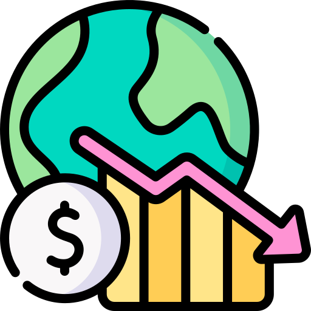

Projects
Machine Learning

Credit Card Fraud Detection
The challenge is to recognize fraudulent credit card transactions so that the customers of credit card companies are not charged for items that they did not purchase.
click here
Customer Segmentation
It’s a way for organizations to understand their customers. Knowing the differences between customer groups, it’s easier to make strategic decisions regarding product growth and marketing.
click here

Recession prediction
The challenge is to predict the recession based on the previous year's data.Through this we can analyse about how future economic growth would be.
click here